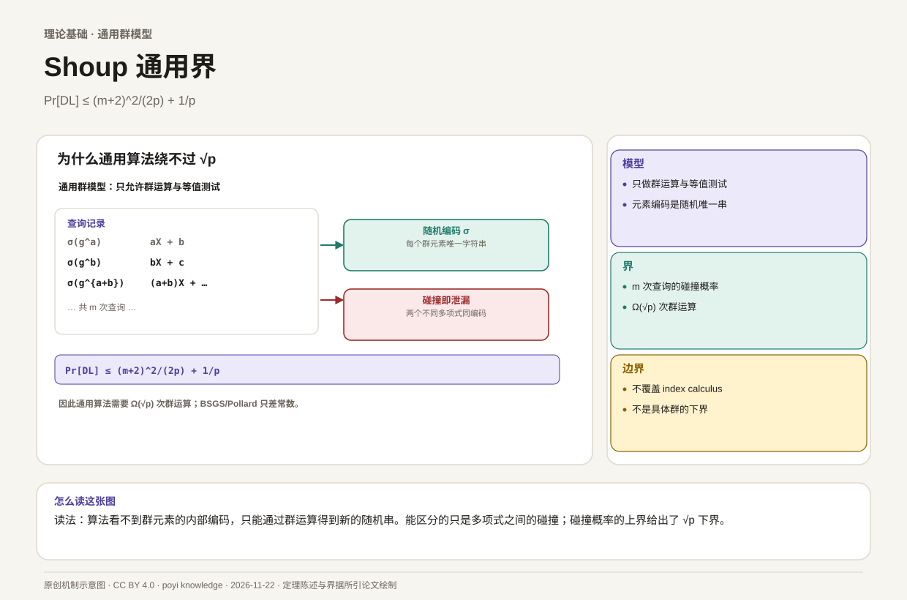
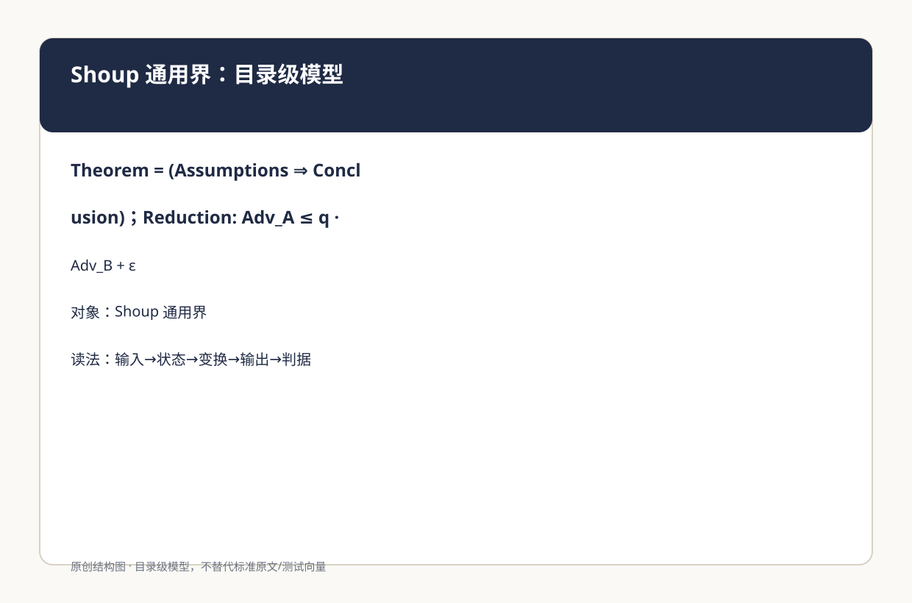

原理与机制
定理：Shoup 通用界（Shoup's Generic Group Bound）。### 通用群模型
在通用群模型（generic group model, GGM）中，群元素不是可读的整数或有理点，而是随机编码 σ(g)。算法只能做三件事：对已知元素做群运算、比较两个编码是否相等、接收挑战编码。它不能利用具体群的特殊性质（例如有限域元素的代数结构、椭圆曲线的坐标方程）。### Shoup 的界
设群阶为素数 p，算法做 m 次群运算，挑战为 σ(g) 与 σ(g^x)。Shoup 证明 Pr[A(p, σ(g), σ(g^x)) = x] ≤ (m+2)^2/(2p) + 1/p。证明思路：模拟器维护编码表与线性多项式 aX+b 的列表；每次群运算对应多项式加法。若两个不同多项式得到同一随机编码，算法就可能“碰巧”区分它们；这种碰撞的概率由 (m+2)^2/(2p) 控制。若没有碰撞，算法看到的所有编码都与 x 独立，无法以高于 1/p 的概率猜出 x。### 从概率界到运算下界
要让成功概率非可忽略，必须让 (m+2)^2/(2p) 达到常数，即 m=Ω(√p)。所以任何通用算法解离散对数都需要 Ω(√p) 次群运算。这个下界与 baby-step giant-step、Pollard rho 的上界只差常数，因此在这些群中通用攻击已经渐进最优。

为什么重要
在椭圆曲线群中，目前没有已知的非通用离散对数算法；最好的攻击是 Pollard rho，约 √p 次群运算。Shoup 的界说明：只要算法不利用曲线坐标的特殊代数结构，√p 就是硬下限。这正是 256 位曲线提供约 128 位安全的原因：p≈2^256，√p≈2^128。### 它不能证明什么
GGM 是一个模型，不是对所有算法的定理。有限域 F_p^* 上的 index calculus 利用了域元素的代数结构，运行时间亚指数，完全绕过 GGM。Shoup 的界也不能排除针对特定曲线的特殊攻击、配对攻击或量子攻击。把“GGM 下界”当成“DLP 在所有群中都难”是常见误读。### 对参数选择的意义
GGM 下界给出的是“通用攻击的成本”，不是“最佳攻击的成本”。选择曲线时还要检查：曲线是否被安全标准收录、是否抗配对/扭曲安全、是否满足 CM 判别式、是否经过可信参数生成。
应用与实例
1.先说明模型：算法是否只使用群运算与等值测试。2.给出群阶 p 与查询数 m，代入 (m+2)^2/(2p)+1/p。3.把概率界换算成运算下界：m=Ω(√p)。4.与已知上界比较：BSGS/Pollard 是否只差常数。5.明确未覆盖的算法类别：index calculus、特殊曲线攻击、量子算法。### 典型用途
- 椭圆曲线参数选择：用 √p 估计通用攻击成本。- 证明协议在 GGM 中的安全性：把敌手限制为通用算法。- 教学：说明为什么“只知道群运算”会限制攻击者，以及模型假设何时不成立。

边界与攻击面
1.模型限制。真实算法可以读取群元素的编码，利用域运算、配对、坐标方程；这些都不在 GGM 中。2.具体群的反例。F_p^* 上的 index calculus 亚指数；某些特殊曲线有更快攻击。GGM 下界不适用于它们。3.预处理与多方计算。Shoup 的原始界针对在线查询；若允许离线预处理或预计算表，界的形式会变。4.m 的含义。界按群运算次数计，不按比特运算或内存访问计；不同成本模型会改变常数。5.量子算法。GGM 是经典模型；量子敌手可以在叠加查询下获得不同界，不能直接套用。6.概率界不是安全证明。它只说明通用算法成功率低；协议的其他部分仍可能泄漏 x。
历史与背景
Nechaev 在 1994 年给出确定性通用算法的下界；Shoup 在 1997 年 EUROCRYPT 上给出概率通用算法的界，覆盖离散对数与相关问题，并给出修正错误 Diffie–Hellman 预言机的方法。这个结果后来成为 GGM 证明的标准工具。### 标准化时代
elliptic-curve 标准化（SECG、NIST、Brainpool、GM/T）用 √p 估计通用攻击成本。Shoup 的界因此不只是理论结果，也进入了曲线参数选择的实践语言。
逐步示例与核验
形式模型与复算步骤
[\Pr[\mathrm{Bad}_A(\lambda)]\le \varepsilon(\lambda)]
Shoup 通用界的公开参数、密钥/随机数与消息；变量说明：Bad 为归约中定义的失败事件，ε 为可忽略函数。1.定义失败事件。2.构造归约把攻击者转成困难问题求解器。3.证明失败概率上界。边界：公式只覆盖已登记的参数与假设；参数取值、标准版本和实现细节仍以来源为准。
参考出处
- Wikipedia search entry for Shoup 通用界. https://zh.wikipedia.org/w/index.php?search=Shoup%20%E9%80%9A%E7%94%A8%E7%95%8C
- Handbook of Applied Cryptography (Menezes, van Oorschot, Vanstone). https://www.cacr.math.uwaterloo.ca/hac/